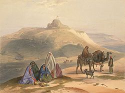
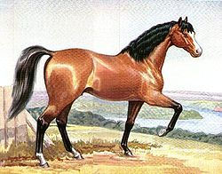
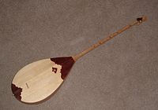

Қазақ халқының шаруашылығы мен мәдениеті туралы
Қазақ хандығы – көшпелі және жартылай көшпелі мал шаруашылығымен айналысқан феодалдық мемлекет болды.
Оның көшпелі және жартылай көшпелі далалық өңірінде патриархалдық – феодалдық қатынас басым болды, ал отырықшы, егінші аймақтарда феодалдық қатынас қалыптасты. Қазақ хандығында облыстық басқару жүйесі емес, ұлттық (ру-рулар бойынша) басқару жүйесі қолданылды. Басқару жүйесінде ру-тайпалық тәртіп сақталып отырды. Туыстығы жақын он шақты түтін бір ауыл, ал жеті атадан тараған бірнеше ауыл бір ата (аймақ) болды. 13-15 атадан қосылатын аймақтар бір ру болды. Осы рулардан тайпа құралды. Қазақ қауымы үш жүзге бөлінді. Ол қазақ хандығына бағынды. Хан – қазақ хандығының азаматтық, әскери, әкімшілік және сот құқын қолына ұстады.
Жүздерді кіші хандар, ұлыстарды сұлтандар, тайпаларды билер, руларды ру басылары, аймақтарды (аталар) ақсақалдар, ауылдарды ауыл ағалары басқарды. Бұл жеті сатылы басқару жүйесі көшпелі екінші қазақ қоғамында тым ертеден келе жатқан тәртіп болатын.
Мал шаруашылығымен айналысқан қазақтар далалық өңірлерде қой , жылқы түйе және сиыр өсірді. Мал – жылдың төрт маусымында табиғи жайылымдарда бағылды. Талай ғасырлық тәжірибеден туған шаруашылық басқару тәсілі жайылымдарды маусымға қарай пайдалану тәртібін қалыптастырды.
Үй кәсібі мен қолөнер дамыды. Өрмек тоқу, тері илеу өнері, қойдың жүнінен шидем, түйенің жүнінен шекпен тоқылды. Ұсақ мал терілерінен тон-шалбар, жарғақ киім жасалды. Ірі қара терілерін илеп, кебіс-мәсі, саптамалар тігілді. Торсық, саба істелді. Киіз басу, текемет, сырмақ жасауға қой жүнін пайдаланды. Мүйізден қасық, түйме, шақша жасады.
Едәуір кең тараған қолөнер ұсталық еді, олар темірден тесе, күрек, балта, шот, орақ, пышақ, қырғыш, таға т.б. жасады. Өндіріс саймандарынан басқа соғыс қару-жарақтарын: қанжар, қылыш, семсер, айбалта, найза, жебе, сүңгілер соқты. Алтын-күміс сияқты асыл металлдардан әшекейлі бұйымдар: білезік, жүзік, сырға, кемер белбеу, ер-тұрман саймандарын жасайтын шеберлер – зергер деп аталды.
Орман тоғайлы жерлерді мекен еткен қазақтар ішінде ағашшылық қолөнері өріс алды.
Қазақтар көктемде 22-наурызлы күн мен түннің теңелетін кезеңін «наурыз тойы» –деп атап өтуді әдетке айналдырған.
XV-XVII ғасырларда қазақтар арасында ислам діні тарады. Алайда, ислам діні еңбекші халық арасында терең тамыр жойған жоқ. Оған себеп дүркін-дүркін жүргізіліп отырған қақтығыстар, соғыстар т.б. Сондықтан халықтың бір бөлігі ислам дінін көпке дейін қабылдамай, тәңірге табынуға негізделген нанымды ұстады. Қазақтар өмірінде отты қасиеттеу үлкен рөл атқарды.
XVI-XVII ғасырларда ауыз әдебиеті кең өріс алды. Ауыз әдебиетінің асыл қазыналарын жасаған, оны ұрпақтан-ұрпаққа жалғастырған халық арасынан шыққан дарынды-ақындар, сал, серілер, жыраулар еді.
Сол кездегі қазақ поэзиясының аса ірі тұлғалары – Шалкиіз (XV ғ.), Доспамбет (XVI ғ.), Жиембет (XVII), т.б. жыраулар. Қазақтың батырлар жыры мысалы: Қобыланды, Алпамыс, Ер Тарғын, Ер Сайын, Қамбар дастандары тарих шындығымен қабысып келе жатқан шығармалар. Қазақтың әлеуметтік – тұрмыстық дастандары да (Қозы Көрпеш-Баян сұлу, Қыз-Жібек т.б.) феодалдық-рулық қоғамның өмірін үлкен шеберлікпен көрсетеді.
Халық арасында ана тіліндегі жазба әдебиет діни және тарихи мазмұндағы кітап түрінде тарады.
Қазақ мәдениетінің бастаулары
Әлемдік мәдениет ырғақтарын анықтаған соң, қазақ мәдениетіне тоқталайық. Қазақтар — Қазақстан Республикасының негізгі тұрғындары, әлемдегі жалпы саны 13 миллионнан асады, исламдық суперөркениеттің солтүстік шығыс жағын мекендейді, діні жағынан ханифиттік мағынадағы мұсылман сунниттер, Алтай тіл бірлестігінің түрік тобының қыпшақ топтамасына жатады. Бұл мәдениетті түсіну мақсатында алдымен оны кеңістік өрісі мен уақыт ағынында қарастырып, кейін қазақ мәдениетінің типтік ерекшеліктерін айқындайық. Қазақ мәдениеті еуразиялық Ұлы дала көшпелілерінің мұрагері болып табылады. Сондықтан осы ұлттық мәдениетті талдауды номадалық (көшпелілік) өркениет ерекшеліктерінен бастайық.
Көшпенділер өркениеті

Әрбір ұлттық мәдениет бос кеңістікте емес, адамдандырылған қоршаған ортада әрекет етеді. Мәдени кеңістік оқшау, мәңгіге берілген енші емес. Ол тарихи ағынның өрісі болып табылады. Мәдени кеңістіктің маңызды қасиеті — оның тылсымдық сипаты. Мысалы, «ата қоныс» ұғымы көпшелілер үшін қасиетті, ол өз жерінің тұтастығының кепілі және көршілес жатқан мекендерге де қол сұғуға болмайтындығын мойындайды. Қауымдық қатынас мекендер егемендігінен туады. Ата қоныстың әрбір жағрафиялық белгілері халық санасында киелі жерлер деп есептелінеді, яғни қоршаған орта киелі таулардан, өзен- көлдерден, аңғарлар мен төбелерден, аруақтар жататын молалардан т.б. тұрады. Олардың қасиеттілігі аңыз-әпсаналарда, жырлар мен көсемсөздерде болашақ ұрпақтарға мұра ретінде қалдырылған.
Белгілі бір парасаттылық, ізгілік, ұстамдылық, интуициялық жоғары қабілеттері жоқ адамдар қатал далада өмір сүре алмас еді. Кеңістікке үйлесімді мәдениетте адам мен табиғаттың арасында «қытай қорғаны» тұрған жоқ. Керісінше, мәдениет олардың арасындағы нәзік үндестікті білдіретін дәнекер қызметін атқарады. Қазақтың төл мәдениетінде экологиялық мәселе әдептіліктік жүйесіндігі обал және сауап деген ұғымдармен тікелей байланыстырылды.
Табиғат аясындағы мәдениетті қатып-сеніп қалған, өзгеріссіз әлем дейтін пікірлер де әдебиетте жиі кездеседі. Алайда, бұл осы мәдениетке тынымсыз қозғалыс тән екендігін аңғармаудан туады. Шексіз далада бір орында тоқталып қалу көшпелілік тіршілікке сәйкес келмейді. Ол мезгілдік, вегитациялық заңдылықтарға бағынып, қозғалыс шеңберінен шықпайды. Әрине бүл қозғалыс негізінен қайталанбалы, тұрақты сипатта болады. Қуаң даланы игеру табиғатты өзгертуге емес, қайта оның ажырамас бір бөлігіне айналуға бағытталған. Яғни, адам табиғат құбылыстарына тәуелді болып қалады.
Көшпенділердің жол серігі

Енді қарастырып отырған өркениеттің кеңістікті игеру құралдарына тоқталып өтейік. Бұл жерде ең алдымен көшпелілер өміріндегі жылқының ерекше бір қызметіне назар аударған жөн. Жылқыны адам еркіне көндіру арқылы адамзат кеңістікті меңгеру ісінде үлкен қадам жасады. К.Ясперстің пікірі бойынша, тағылықтан өркениетке өтуде жер суару жүйелерін жасаумен, жазудың ашылуымен, этностардың пайда болуымен қатар жылқыны пайдалана білу адамзат үшін өте маңызды болды. Жылқыны пайдалана білу шектелген кеңістіктен бүкіл әлемді игеруге бағытталған қадам еді. Бұл әртүрлі мәдениеттердің сұхбаттасуына мүмкіндік берді. Әрине, бұл сұхбаттасу көптеген жағдайда зорлық-зомбылық арқылы жүзеге асқанын ұмытпаған да жөн.
Сонау көне заманнан халықтар солтүстіктен оңтүстікке, шығыстан батысқа қарай (немесе керісінше) қозғалыста болған.Белгілі ғұлама А. Вебердің пікірі бойынша, көшпелі тайпалардың кеңістікті игеруі «халықтардың Ұлы қоныс аударуы» атты құбылысты әкелді. Бұл қазіргі өркениетгердің қалыптасуына үлкен себебін тигізді. Осы айтылғандардан адамзат тарихында жылқыны пайдалана білудің маңызы зор болғандығын көреміз.
Жылқыны кеңістікті жеңу мақсатында әсіресе, көшпелі халықтар шебер пайдалана білген. Ат пен көшпенді біріккен жан болып көрінеді.
Атқа мінген адам жерден өзінің босай бастағанын, еріктілік мүмкіндіктерінің молайғанын және ғарышқа жақындай түскенін сезінеді. Жер-Ана оны қаншама босатқысы келмесе де, ол шексі әлемге өзінің қадамын нық басады. Халық дәстүрінде де тәй- тәй қадам басқан нәрестенің тұсауын кеседі.Қазақ халқы жылқыны мал бағуда көшуде өте көмегі зор болған.
Кеңістікті игеруге көшпелілер үшін жылқыдан басқа да себебін тигізген қолға үйретілген жануарлар болған. Себебі далада тек малшылар мен үй малдарынан басқа да тіршілік иелері бар. Олардың ішінде иттің алатын орны бөлек. Қазақ «ит — жеті қазынаның бірі» деп бекерден-бекер айтпаған. Егер қой мен сиырдың өнімдерін қажеттікке жарату үшін оларды бағу жеткілікті болса, онда ит пен жылқыны баулу, үйрету керек. Бұл үлкен шеберлік пен төзімділікті талап етті. Тек сол жағдайда олар адамның көмекшілеріне айнала алады..
Музыка тарихына шолу

Домбыра
Қазақтардың музыкалық мәдениетінің тамыры өте тереңде жатыр. Жартастардағы суреттерден билеп жүрген адамдардың, таяққа ілінген сылдырмақтарда ойнап тұрған адам бейнелерін кездестіруге болады. Әсілі, көшпелілердегі ең көне музыкалық аспаптар — ұрмалы даңғыра, құрайдан жасалған үрмелі сыбызғы, ілмелі-шертпелі қобыз , домбыра іспеттес қарапайым аспаптар болған. Эпостардағы «адырнасын ала өгіздей мөңіреткен» деп келетін жыр жолдары өнерпаз жауынгердің садағының адырнасын іркіп- тартып музыкалық үн шығаратынын білдірсе керек. Орталық Азия, Сібір , Тибет халықтарында бүгінге дейін кездесетін бір ішекті қобыз осы музыкалық аспаптың көне түрі болуы мүмкін.
Көне Хорезм жеріндегі Қойкырылған қала деп аталатын дөңгелек бекіністен домбыра сияқты екі ішекті аспапта ойнап отырғанадамдардың бейнесі табылған. Зерттеушілердің ойынша, бұл домбыраның көне түрі. Академик В.В.Виноградовтың пікірінше, қазақтың домбырасы мен қырғыздың қобызы сиякты аспап кем дегенде бүдан екі мың жыл бүрын пайда болған, қазақтың қобызы осы күнгі виолончель, скрипкалардың арғы атасы.
Ауызбен үрлеп ойнайтын қазақтың қыштан жасалған уілдек деп аталатын аспабының көне түрлері ортағасырлық Отырарқаласынан, Жамбыл облысындағы Ақтөбе ( Баласағұн) қаласынан табылған. Олар X—XII ғасырларға жатады.
Қорқыт ата бүкіл түркілер әлемінің сарын, күй, әуен өнерінің атасы болса, одан бергі музыка өнері әл-Фарабидің (IX—X ғасырдарда), ибн-Синаның (Xғасыр), ұлы жыршы Кетбұғаның (XIII ғасырда), Сыпыра жыраудың (XIV ғасырда), Асан қайғының(XV ғасырда), Қазтуғанның (XV ғасырда), Әбу әл-Қадырдың (XV ғасырда), Әбдірахман Жәмидің (XV ғасырда), Бұқардың (XVIII ғасырда), Нысан абыздың (XVIII ғасырда) аттарымен байланысты. Олар күйші-сазгер, жыршылар болған. Ал әл-Фараби, ибн-Сина музыка ілімініңтеориясын алғаш жасаушы ғалымдар .
Қазақ музыка өнерінің болмысы
Қазақта би өнері ертеден дамыған. Өкінішке орай, қазақ би өнері олі жақсы зерттелдеген. Қазақ билері көбінесе би биленетін әуен , күй атымен аталып жүр. Мысалы, « Былқылдақ«, «Айжан қыз«, « Боз іңген«, « Сәулем-ай«, « Кербез сылқым«, « Қос алқа«. Ескі билер қатарына « Алқа қотан«, « Ұтыс би«, « Киіз басу«, т.б. жатады.
Қазақтың әдет-ғұрыптық фольклорына «Жар-жар «, « Беташар«, « Сыңсу«, «Жоқтау «, «Бесік жыры«, « Тойбастар«, т.б. жатады.
Жар-жар — келін түскенде жиналған жастар, көпшілік айтатын өлең .
Беташар — жаңа түскен келінді таныстыру, күйеуінің туыстарына, ауыл ақсақалдарына сәлем бергізу, жас келінге ақыл — нақыл айту өлеңі. Оны бірадам орындайды.
Тойбастар — той басталар алдындағы тойшыларға арнап айтатын, сонымен қатар тойдың соңында әр дастарқанда отырған тойшылардың тойға арнап айтатын әні .
Сыңсу — қыздың елінен ұзатыларда елімен, қыздық ғұмырымен, туыстарымен қоштасу, мұң-шерін ақтару әні .
Бесік жыры — бесіктегі жас баланы алдарқату, уату әні. Бесік жыры арқылы бала сәби кезінен елінің әуеніне, тіліне үйренеді. Оның тәрбиелік мәні үлкен.
Жоқтау — елген адамның туыстарының фәниден кеткен адамға арнап айтатын мұңды жылау өлеңі. Оны көбіне әйелдер, қыздар айтқан. Осы аталған ғұрыптық ән түрлерінің өзіндік сөзі, әуендері болады.
Қазақ музыка өнері өзінің болмысы жағынан біртұтас дүние. Мысалы, сонау VIII ғасырдан келе жатқан Қорқыт ата күйлерінің Сыр бойында, Қаратау бөктерінде, Сарыарқа белдерінде, Ертіс , Еділ бойларында еш өзгеріссіз бірдей орындалуы қазақ музыка дәстүрінің бірлігін көрсететін сияқты. « Ақсақ құлан» күйінің Алтай мен Атырау аралығында бірдей орындалуы қазақтың рухани тұтастығын көрсетеді. Ұлан-ғайыр қазақ даласында әншілік , күйшілік өнердің өзіндік аймақтық мектептері де қалыптасқан. Мысалы, қазақтың домбыра күйлері шертпе және төкпе күйлер болып, негізінен, екіге бөлінеді. Шертпе күй Орталық, Шығыс Қазақстанда , Жетісуда , Қаратау аймағында кең тараса, төкпе күй Қазақстанның батыс өлкелерінде, Сырдың төменгі ағысында кең таралған. Шертпе күйдің өзі шығыстағы Байжігіт мектебі, Қаратау шертпелері болып бөлінеді.
Әншілік мектептер
XIX ғасыр мен XX ғасырдың басындағы әншілік өнерін ғалымдар бес мектепке бөліп жүр. Бірінші мектеп —Қазақстанның орталық және солтустік өңірлеріне тән. Бұл мектепке Біржан , Ақан , Жаяу Мұса, Ыбырай, т.б. әуендері жатады. Екінші мектеп — оңтустік және Жетісу өңірі әуендері. Бұл мектепке Сүйінбай , Жамбыл , Кенен Әзірбаев, т.б. жатады. Үшіншісі — Қазақстанның батыс өңірін қамтитын әншілік мектеп. Бұл мектеп әндері асау — тайдай тулаған қуатты, екпінді әуездер. Бұл мектептің өкілдеріне Кердері Әубәкір , Мұхит , Махамбет, т.б. жатады. Төртіншісі — Сыр бойының әншілік-термешілік мектебі. Бесінші — Шығыс Қазақстан, Моңғолия , Шығыс Түркістан қазақтарының әншілік мектебі. Бұл әншілік мектептер өзара стильдік жағынан бөлінгенмен, ұлттық ортақ нақыш, әуен тұтастығымен бірлікте .
Музыкалық аспаптар
Қазақ музыкалық аспаптары : ішекті , үрмелі және соқпалы болып үшке бөлінеді. Ішекті аспаптың өзі шертпелі және ысқышты болып екіге бөлінеді. Шертпелі ішекті аспаптарға: домбыра , шертер , жетіген жатады. Ал ысқымен ойнайтын ішекті аспапқа қобыз жатады.
Үрмелі аспаптарға — сыбызғы , қамыссырнай , қоссырнай, мүйіз сырнай , сазсырнай, үскірік , тастауық , керней жатады. Осы топтың ерекше бір тілді аспабы — шаңқобыз .
Соқпалы аспаптарға — дабыл , даңғыра , кепшік , дауылпаз , шыңдауыл , асатаяқ , қоңырау жатады.
Домбыра — екі ішекті, 9—14 пернеге дейін болатын шертпелі аспап. Домбыраның ішегі, пернесі ешкінің, қойдың ішегінен жасалады. Домбыраның қазақта көптеген түрі болған. Негізі көп тарағаны екі түрі. Бірінің кеудесі томпақ та, ал екіншісінікі ұзынша текше. Томпақ кеуделі домбыра, негізінен, батыс аймақта, ал шығыста жайпақ домбыра көп таралған. Домбыраның осы формаларының өз ішінде әр түрлі пішіндеріде кездеседі. Домбыраның кейде үш ішекті түрі де кездеседі.
Қобыз — екі ішекті, ысқышпен ойнайтын аспап, ішегі аттың қылынан есіп жасалады. Қобыз да өте көне аспап. Қобыз әу баста көбінесе бақсылар пайдаланған аспап болғандықтан, қазақ оны киелі санайды. Қобыз, әдетте, тұтас ағаштан шауып жасалады. Кеудесі жалпақ астауша құсап, мойны ішке қарай иіліп келеді. Қобыздың жалпы тұрқы бірдей болғанымен, тұрпатында кейбір өзгешеліктер кездеседі. Бақсылардың қобызының басына үкі, неше түрлі салпыншақ темір , ұсақ қоңыраушалар тағылады. Қобыздың кеудесіндегі ойыққа айна орнатылады. Бұл заттардың дәстүрлік және әуендік қызметі бар. Бақсы қобызымен сарнаған кезде қобыздың басын дірілдетіп-сілкіп, салпыншақ темірлерді сылдырлатады, айнаға қарап жынын шақырады. Мұндай бақсы қобыздарын қара қобыз, нарқобыз деп атайды. Бұл — көне, Қобыз қасиетті қобыз дегенді білдіреді.
Бақсы пайдаланатын аспаптардың бірі — асатаяқ. Oл — басы жалпақ, оймышталған таяқ. Жалпақ басына әр түрлі сылдырмақтар, қоңыраушалар орнатылады. Асатаяқты ел кезіп, елді «ақтап» (пәле-жаладан «арылтып») жүретін диуаналар да ұстаған. Бақсылар жиі пайдаланатын аспап — даңғыра. Бұл кәдімгі барабан сияқты. Бірақ шеңбердің бір-ақ жағына әбден кепкен тері қапталады да, ашық жақ қапталдарына әр түрлі салпыншақ темірлер тағылады.
Жетіген аты айтып тұрғандай, жеті ішекті аспап. Ішектерге тиек ретінде және ішектің дыбысын реттеуші тетік ретінде асық пайдаланылады.
Үрмелі аспаптардың ішіндегі ең кең таралғандары: сыбызғы және сырнай . Сыбызғы кепкен қурайдан, жуан қамыстан жасалады. Сыбызғының ортан белінен былай қарай бірнеше жерден теседі. Басынан ерінге салып үрлеп, тесіктерін саусақпен басып ойнайды. Сыбызғы күйлері, әдетте, екі дыбысты (дауысты) болады, бірін сыбызғыға үрлеп отырып шығарса, екінші дыбысты тамақ үнімен қосады. Сырнайбірнеше түрлі болады: қамыс сырнай қамыстан, мүйіз сырнай мүйізден жасалады. Мүйіз сырнайды көбіне жорықта пайдаланған.
Саз балшықтан күйдіріліп жасалатын үрмелі аспаптар: сазсырнай, үскірік, тастауық. Бұл жұдырықтай, іші қуыс құты сияқты, үрлейтін және бірнеше бармақпен басатын тесігі бар аспап.
Соқпалы аспаптардың ең үлкені, үндісі — дабыл. Бұл екі жағы да терімен қапталған кәдімгі барабан сияқты аспап. Онымен тұтқиылдан қауіп төнгенде, не елді бір жиынға шақырғанда, дәстүрлі мейрамдарға ел жинағанда, соғыста пайдаланған. Дауылпаз дабылдан кішілеу, оның да екі ернеуі ағаштан, ал шыңдауыл деп аталатын аспап та осындай, бірақ оның шеңбер бүйірі темірден жасалады